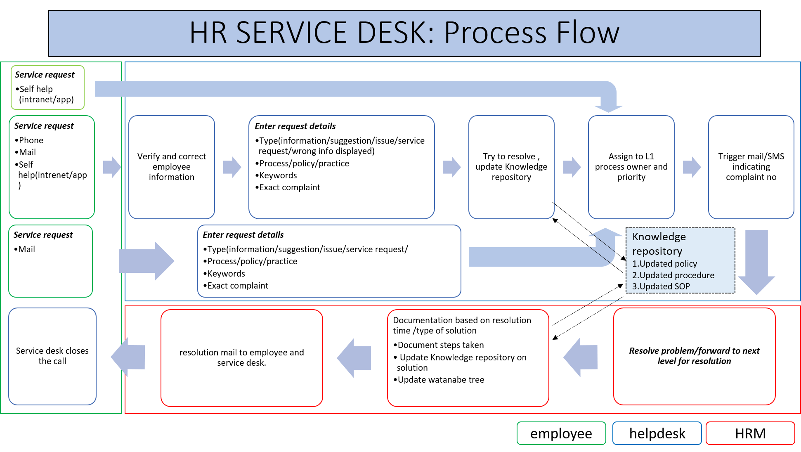

- HR SERVICE CENTRE : STRATEGY
Tata Steel India, in 2019 is at unique growth stage , fuelling its growth through domestic acquisition and brown field rojects. It is also changing its structure by spinning new subsidiary companies to focus on specific
sectors , like mining and long products .
To drive future growth and streamline its business it needs changes in HR strategy. Concept of Service Centre is one of the explored options.
service centre concepts brings following advantages in boosting process efficiency and cost optimization :
- Integrated process to deliver improved and consistent customer experience.
- SLA based transaction services leading to freeing up the bandwidth of resources performing routine transactional activities.
- Integrating HR of growing organization like Tata Steel will help in centralization and standardization ,which in turn helps in cost optimization . Centralizing and standardizing HR routine activity across new acquisition ( Bhushan Steel ,
Usha martin ) and new divisions (TS Long Products , TS Mining ) will improve both delivery consistency and cost of HR.
- Streamline/standardize/re-engineer/automate business processes leading to increased efficiency, visibility, and controls.
- Analyse transactional data, develop and deploy data models and develop dashboards leading to better decision support
- WHAT IS HR SERVICE CENTRE
The Services Centre model evolution shows the progression of how HR Service centre has organized itself to provide HR services to the organization. Many companies began their shared services journey in a decentralized model, moving next to a
centralized and standardized model and finally to a complex and global-facing model
- The decentralized model refers to companies that do not have a true shared services area. It is the responsibility of COEs and HRBPs to provide HR services to employees
- The centralized and standardized model is the next level of evolution for most centres. In this stage, the companies have structured an HR Service centre centre, and are providing transactional HR services in areas such as payroll,
benefits, and job leaves. The services are provided to the employees in a standard manner
- The centralized and standardized model is the next level of evolution for most centres. In this stage, the companies have structured an HR Service centre centre, and are providing transactional HR services in areas such as payroll,
benefits, and job leaves. The services are provided to the employees in a standard manner
Tata steel , is currently in centralized and standardized stage ,It has HR business process and Centre of excellence . Many transactional services are currently done by HR and needs to be transferred to service centre .Tata steel has started
the process of setting up Service desk for handling transactional jobs . It is also aiming at stage three by trying to setup service centres for employee onboarding and other specialized HR functions
- HR SERVICE CENTRE : SELECTING PROCESS TO BE TRANSFERRED TO SERVICE CENTRE
- Decision criteria
In the first stage of Service centre ,should be function centric , trying to create value through complexity reduction , automation , standardization of the functions . This will help in making employee experience more consistent and better
while freeing up HR executives for more strategic jobs through operational support .
Following Dave Ulrich model of HR roles , functions which require more administrative role can be extended to service centre.
Another angle to consider while deciding is whether a HR job nature is transaction, translation ,transition or transformational . Translation role require more human touch and interaction and hence are suitable for service centre . HR process
requiring transformational role ,like strategy making are very critical and should be always kept at organization . Transaction and transition jobs should be the first one to be transferred transferred to service centre.
Lastly all HR process can be mapped in 2X2 matrix according to value they add to organization and complexity of the process , low complex and high value adding job would be prime candidate for shared service
Following Decision framework can be used for selecting process
- 4T model of HR by kossek and block
- Vale added Vs Complexity
- HR process of Tata Steel
Various HR process involving 7 stages of employee life cycle consists of Outreach, Recruitment, Onboarding, Performance, Development, Retention and Offboarding
There are about 18 HR process at Tata Steel
- HR process of Tata Steel as per 4T HR Roles (Kossek and Block)
All l process of HR can be mapped to transaction , translation , transition and transformation as per role. Activities having predominantly transactional role can be moved to service centre in first stage followed by transition roles .
Process involving translational role rely more on interaction and transformational activities are very critical, so service centre needs to develop maturity and trust before such activities can be transferred.Many process require more than
one type of role , they need to be broken down into activities to determine type of role HR plays
- HR process of Tata Steel mapped as per value addition and complexity
Various HR process can be mapped in 2X2 matrix on basis of value addition and complexity. least complex process having more value to add should be transferred to Service centre first. Service centre should approach more complex process having
low value to add at last.Highly complex process like strategy and employee relation to be kept out of service centre .
- Decision tree for process selection
Also one can follow a decision tree to decide how to execute any ne HR process that comes up in future
- HR SERVICE CENTRE: IMPLEMENTATION PLAN
- Guiding Principles
The guiding principles used for designing and gaining most advantages through service centre are as follows :
- Simple
- Easy to use with minimal number of steps
- Decision making at the lowest appropriate level
- Standardize
- o Build global processes and standards, Minimize localization and customization preventing workarounds
- Optimize and integrate HR service delivery model
- Stewardship
- Well defined process with ownership
- Enable employee and manager to manage their data
- Systems
- Optimize the use of automation and technology
- Streamline collecting and reporting of timely, accurate data
- Be scalable and flexible to meet future requirements
- Setting up phase
HR service centre setting up needs to be done in two phases , the first phase would be more concerned with setting up and establishing, where the business discusses and debated advantages of service centre and how it best suits long term
strategy , it stage is also concerned with creating enabling ecosystem and infrastructure for the service centre to flourish .If done correctly this stage will help develop trust and credibility between service centre and business and will
help in next stage .
The second stage would be value creation envisioned in stage one , in this stage service centre delivers on promises through supporting HR process . Data analysis and use of technology is critical for value creation
Point wise the stages are as follows:
- Stage 1:Set-up & Establish
- Conceptualize & justify benefits
- Deliver to promise, process standardization/discipline/controls
- Establish infrastructure, policies, and other building blocks
- Gain business dependency & trust
- Stage 2: Value Creation
- Stakeholder satisfaction
- Value creation through Data Analysis
- Decision Support, Process Transformations/Automation, end to end process efficiency improvement
- Service centre setting up process :
Blackbook model for successful setting up of outsourcing can be followed to setup service centre
- strategic decision of whether to outsource and what to outsource
- defining scope of work , vendor selection for work
- finalizing contract after negotiation
- : Implementation step , includes planning transition , launching project .setting up facility etc
- management of services, monitoring performance , budget compliance etc
- delivery result , liaising with customer through survey etc to check effectiveness of result
- day to day activity support for successful operation of service centre
- HR SERVICE CENTRE :STRUCTURE AND PROCESS
- Service centre structure
Service centre is a role based organization. Role expectation, including span of control is defined at the outset, for all roles. The role holder may be part of the permanent or contractual workforce. Interaction and close coordination between
service centre and Tata Steel HR is must for success
Service centre will have 5 main verticals
- Service Desk : employee facing unit for capturing ,analysing , solutioning and closing any HR related issue . This unit will also capture employee feedback and suggestions
- Operational Services : Various simple and transactional nature HR process will come under service centre in phased manner ,eg:,Data administration, Time and attendance, Payroll
- HR Expert Services: Various complex HR process requiring specific skill set ,performed by service centre ,eg: Employee on boarding ,Engagement survey etc
- Service centre governance: Service centre governance and technical jobs will be carried by this group , eg: HR dashboard and MIS, Analytics etc
- Non HR legacy system: Tata Steel HR has responsibility of many legacy system which are not HR related , example travel desk. This legacy system activities can be clubbed as one group
- Interaction with tata steel HR:
The whole HR delivery can be classified in 5 tiers, Service Centre cuts across tiers . Service centres helps people in each tiers in carrying out their duties .
Tata steel HR handles functions like strategy , consultation advisory and facilitation to business unit , change management , and governance of whole HR system whereas service centre deals in functions like information handling , HR
transactions , data management , compliance management etc
Various service tiers how service centre is integrated is explained as follows :
- Tier 1: Employee Self help : Employee gets own response and completes own transaction ,through Self help portal/ chat bot . this tier uses IT enabled services to serve the most basic need/query of employee.
- Tier 1: Employee Self help : Employee gets own response and completes own transaction ,through Self help portal/ chat bot . this tier uses IT enabled services to serve the most basic need/query of employee.
- Tier 3: HR business partner : This tier sits close to customer /business , they provide consultation to business . Service centre helps in their work through dashboards and data enabling data driven decision making . also tier 1 and tier
2 helps in reducing their administrative workload , and hence enabling them to focus more on strategic HR jobs.
- Tier 4: HR Process owner : HR process owner are responsible for administration and governance of various HR process like recruitment , talent development etc .
Service centre can have special teams to carry out some specific jobs like employee on- boarding .
HR process owner will be last step to close any escalated ticket not resolved by service centre . They will also gain through online ticket tracker .
Process owner will work closely with service centres in data analysis based process improvement , example implementing countermeasure based on complaints.
lastly HR process owner would be responsible in training the service centre on company HR policies . They will make and update knowledge repository for faster troubleshooting by Service desk
- Tier 5 :Last tier is centre of excellence : this tier is involved in executing new projects ,and making strategies . they will immensely gain from integrated data coming form service centre . deep analysis will give new insights and will
enable this tier to make relevant changes in polices and strategies ,which will improve overall HR delivery
- Adapting HR for success of Service centre:
Jay Galbraith's Star Model helps holistically create the organization necessary to sustain a company's business models and value propositions over time. It acknowledges the necessity of the organization to adapt over time in response to changes
in strategy, in market forces, or in the rest of the external business environment. Thus it treats the formal organization as an ongoing design challenge
The Star Model consists of five areas that should be connected and aligned to successfully shape the decisions and behaviours of your organization: Strategy, Structure, Processes, Rewards, and People. Decisions about the business model impact
implementation across these five areas.
Using Star model to explain changes required at organization level to make service centre a success , we start with fixing the strategy and then try to foresee changes required in rest 4 areas.
- Strategy: HR process efficiency improvements and cost optimization
- Structure: to achieve the strategy , establishing service centre would be key initiative because of the advantages it has over traditional HR structure, as explained previously in the report
- Processes: For service centre to work efficiently we need to change process of how HR services are processed .
A robust ticketing tool would allow for tracking between HR and service centre .
Use of data analytics as basis of decision making will also be major shift in process , this data driven culture will enable value creation for service centre
HR service delivery in different tiers as explained earlier will be required to boost efficiency an reduce redundancy
- Rewards: Service centre needs to be SLA(service level agreement ) driven , additional parameters like NPS(Net promoter score ) can also be used to as basis for rewards
- People: Without customer centric approach , service centre cannot exceed , it needs to see employee as customer and work to make their experience good .
Training to service centre staff , especially to Service desk staff is must , they should be trained on HR , Policy, Procedure and Practices .
Service Centre employee needs to be also oriented on organization culture and values .
Lastly , once service centre takes over administrative jobs, Tata Steel HR employee also need upskilling so that they are able to do more strategic HR jobs
- HR SERVICE CENTRE : CHALLENGES
Although service centre is one of the hot topics in HR having several advantages ,but while implementation Tata Steel needs to keep watch on following important points :
- Customer Centricity and Service Delivery Mindset
The most important skill that needs to be imbibed into the people is customer centricity. Customer reviews, timely feedbacks, surveys, Voice of Customer and multiple other customer
focused initiatives must be driven, on a continuous basis, to know customer expectations from business.. Other facilitating factors such as contracted agreements for scope of work, service chargeability, transparency on resourcing and costing
of, defined governance/ escalation methods, SLA monitoring and reporting, must also be in place
- Stakeholder management
Managing stakeholder is always important in any decision following stakeholders play a crucial role
- Top management support is crucial for success of service centre ,Quarterly reviews and meetings ensure appropriate senior management focus on the program
- Involving union members and building their trust in service centre is crucial as Tata Steel has huge number of union workforce
- Selecting correct partners for Service centre is must , we need partners for administrative HR work , for specialist HR work and for technology support. Working for long term partnership is best way forward
- Existing HR support
: Service centre process should be well designed and all IT technology should be easy to use. Business Unit HR and HR process owners should not see service centre as burden but as helpful value adding unit.
Upskilling and redeployment of current HR workforce in more meaningful and critical work will become a challenge once service desk share the day to day administrative workload .
- Tools, Technology and Data Enablement
Workflow based solutions, ticketing applications, shared workplace, and reporting tools are some basic IT technologies required in a Service centre environment.
Maintaining employee data integrity while enabling service centre for problem resolution and data analytics , will be a challenge . This needs good and fool proof IT solution
Also, as the Service centre generates and handles large volume of data, security compliance, including controlled, role-based access to systems and data is critical.
lastly developing meaningful dashboards which augment in decision making should be focus as there is danger of getting lost in data .
- HR SERVICE DESK
In journey of setting service centre for HR , the first major step was setting up of service desk . Service Desk was initiated in February 2020, but the work could not be progressed as per plan due to COVID restrictions .
The need as Service Desk was felt as Tata Steel lacked a comprehensive system that enables the capturing ,prioritizing, solutioning ,closure and measurement of experience for any HR related issue that any employee for manager may have.
Any HRM issue is dealt in relatively anecdotal manner through multiple channel of communication which is neither efficient nor effective . this leads to inadequate service level and below par experience for concerned employee/manager .
To resolve above mentioned problem a service desk was envisioned with following structure:
- A multimodal access to every employee of the company to register his/her requirement of any HRM related service . requirement could be individual or organizational level
- A ticketing service to delegate issue to responsible agency to resolve query /requirement /grievance. Ticketing system would enable system to delegate issue to multiple agency if required .To begin with resolution lie with HR of tata steel
, slowly low level request can be self services or resolved by service desk employee
- A systematic and automated process of tracking , reviewing and escalating (if required ) such registered requirement.
- MIS and daily management platform and related analytics to understand trends , performance of individual agencies (HR process), resolution time, bottleneck process and potential areas for improvement
- A comprehensive visibility (including alerts and updates) of the current status of the specific ticket across all stakeholders associated with it, including user/manager
- A system of formally closing the issue (by the user/manager) and obtaining end user feedback for all such services/resolution.
- SERVICE DESK : PROCESS AND MONITORING
The need as Service Desk was felt as Tata Steel lacked a comprehensive system that enables the process flow of Service Desk has following steps :
- Initial contact : Any employee willing to contact service desk can do so through following methods , anyone can contact service desk on behalf of a employee also
- Mail : separate mail ID created for service desk
- Phone : a toll free number and call centre setup for service desk , it has capacity of processing 500 calls a day
- Intranet : a separate service desk dedicated page at company intranet portal
there could be 4 types of request a user can make , call centre employee will take note of it , these are
- Query : it can be inquiry about any HR related process , it is basically information request
- Complaint : it is regarding any problem employee is facing related to HR
- Request: It is service request from HR , example request for hiring , it would generally be made for the department
- Sugegstion :any employee willing to register suggestion regarding HR practice
- Once call received , details to be entered in IT system , along with genric information like , employee id , department ,type of request etc
- Ticket generation and tracking: At this stage a ticket would be generated and employee should be informed with about ticket generation with ticket number through mail . A mail would be triggered to employee at every stage
- Ticket assignment: ticket will be forwarded to correct person for resolution .
this step initially will be done with help of coordinator form HR department , but as service desk employee undergo training and learn the HR process they would be performing the task of ticket assignment .
Ticket would be assigned to HR process owner , I have already discussed various process of HR earlier in the report .
HR process owner can further assign ticket to multiple person whose help is required for closing the request .
this step will become efficient with training and experience
- Solving the request : once HR has taken action , details would be entered in IT system and ticket closed form their end
- Ticket closure:ticket closure request , along with details of action taken will be mailed to employee , asking his confirmation for closure . A feedback form will also be initiated.
- Knowledge management and tracker system updation: once ticket is closed , various data will be captured by system , eg: time taken to closed the call , details of action taken etc .
knowledge database will be updated with action taken and will be used for training purpose to make system more efficient , in future simple tickets can be closed by service desk operator .
Data will be used for performance review and tacker updation
lastly data will be used to draw insights to improve the whole HR process and delivery

- SERVICE DESK : SETTING UP
The steps taken for setting up service desk is following :
- Management approval:
A case was presented to management with need for service desk , its deliverable , implementation timeline and budget requirement , management approval was taken and review committee was formed . A team of HR
professional was made to work on setting up Service Desk.
- Vendor selection:
HR team and procurement team collaborated to prepare terms and condition . A panel was formed for vendor evaluation on various parameters , like : prior experience in operating service desk , technology
strength , process knowledge , cost . Vendor was finalized and non disclosure agreement was signed
- HR process mapping:
Team met all HR senior leaders to understand all HR process. A final list of HR process with process owner was prepared . These process owner will be contacted by service desk for call resolution . The
process owner were syndicated abut their role and formal letter was issued form top management
- Technology selection:
HR team and vendor team ,discussed along with Tata Steel IT team for electing the technology and ticketing tool .
Process were developed and trial taken for integrating various ways to log a call on to ticketing tool .
A self help tool was also developed for employee.
- Operating procedure and documentation:
HR team and process owners sat down and prepared operating procedure for call allocation and resolution . Also training document was prepared for service desk employee, these documents were
about HR polices and practices
- Training of Service desk employee:
HR team and Vendor team worked closely and service desk employee were trained . mock call were made to test on real time basis.
Training on IT system and customer orientation was reinforced
- Training to HR:
training session for HR process owner was important for their familiarity on closing call on ticketing tool
- Communication to stakeholder:
Various communication effort like , meeting, mailer, etc were undertaken to well communicated the effort
- Roll Out:
service desk roll out is under progress in phased manner , only few departments were involved in first stage . The whole process was finetuned based on feedback . Company wide roll out is planned soon.
- Review Process:
War room was set up for monitoring progress of service desk , daily ticket and their resolution was monitored closely . Key Performance indicator tracker was developed for service desk .
- CONCLUSION
Tata Steel has taken steps in right direction by setting up service desk and initiating service centre . I anticipate a drastic change over the next few years in the overall operating model of HR. Evolution already taking place through the
overall HR service centre model.
Many of Tata group companies are already operating much advanced service centre , Tata Motors has global delivery centre , which includes service centre for finance, procurement, IT and HR . It won’t be a surprise if Tata Steel also integrates
its various service centre into a common delivery centre. Idea of delivery centre makes more sense as Tata Steel India operation becomes more geographic diverse.
Service desk is poised to become face of HR to employee populations and the HR function will need to continue to drive strategic value in order to thrive in a new digital world. HR executives need to ensure that their team will flourish in this
new customer centric environment in order to create the experiences and moments that employees have come to expect in the age of digital consumer service.